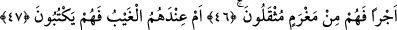

KUR’AN’I YALAN SAYANI
BANA BIRAK!
42. O gün incikten açılır ve secdeye dâvet edilirler; fakat güç getiremezler.
43. Gözleri horluktan aşağı düşmüş bir hâlde kendilerini zillet bürür. Halbuki
onlar, sapasağlam iken de secdeye dâvet ediliyorlardı (fakat yine secde
etmiyorlardı).
44. (Rasûlüm!) Sen bu sözü (Kur’an’ı) yalan sayanı bana bırak (kendini üzme).
Biz onları, bilmedikleri bir yönden yavaş yavaş azâba yaklaştırıyoruz.
45. Onlara mühlet veriyorum. Doğrusu benim fendim çok sağlamdır!
46. Yoksa sen onlardan bir ücret istiyorsun da bu yüzden onlar ağır bir borç
altında mı kalıyorlar?
47. Yahut gaybın bilgisi onların nezdinde de, onlar mı (istedikleri gibi) yazıyorlar?
“O gün incikten açılır.” Arapça dilbilgisi kurallarına göre “gün” anlamına gelen
“yevm” kelimesi, “hatırla” mânâsındaki mukadder bir “üzkür” fiili ile mansuptur.
Baldır anlamına gelen “sâk” kelimesi, “açılır” demek olan “yükşefu” fiilinin fâili
yerindedir. Baldırın açılacağı günden maksad, kıyâmet günüdür. Bir başka ifâdeyle
burada şöyle denmiş oluyor: “İşlerin şiddetlendiği ve konuşmanın zor olduğu o günü
hatırla.”
“Baldırın açılması” anlamına gelen “keşfu’s-sâk” ifâdesi, o gün yaşanacak zorluk ve
korkuları mecâzî yolla dile getirmek içindir; yoksa ortada ne baldır vardır, ne de
açılma.
Bu ifâde tıpkı, cimri bir kimsenin mecâzî yolla “eli bağlı” şeklinde anlatılması
gibidir; oysa burada da ne el söz konusudur ne de bağlanma. Bu, cimriliğin sâdece
mecâzî yoldan anlatımından ibârettir. Cimriye “eli bağlı” dendiğinde, cimri kimseye
harcama nasip edilmeyişi, eli bağlanan kimsenin durumuna benzetilmiş olmaktadır.
Dolayısıyla âyette “keşfu’s-sâk” ifâdesiyle kıyâmet günü mahşere gelen kimsenin hâli,
tıpkı tesettürlü, erkeklerin arasına hiç çıkmamış, ama bu açıdan sıkıntıya düşmüş bir